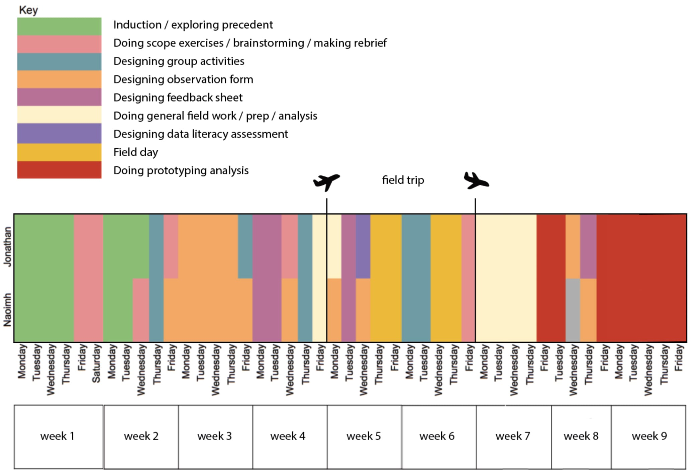
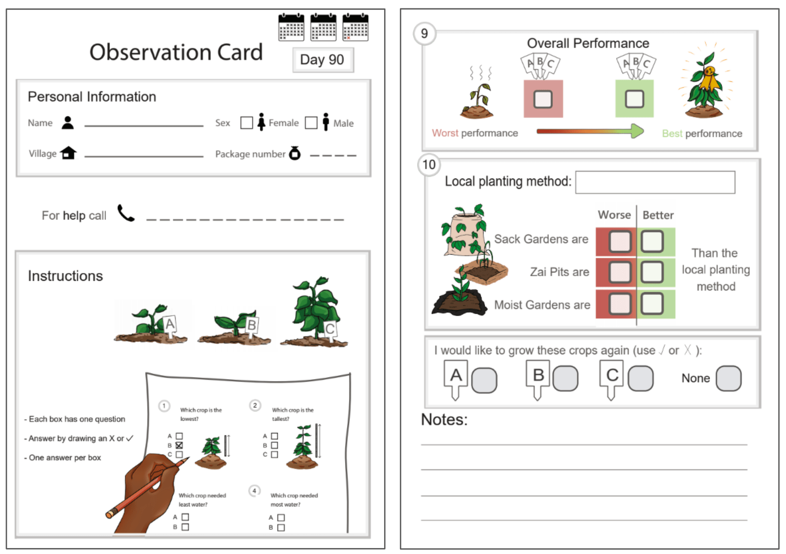
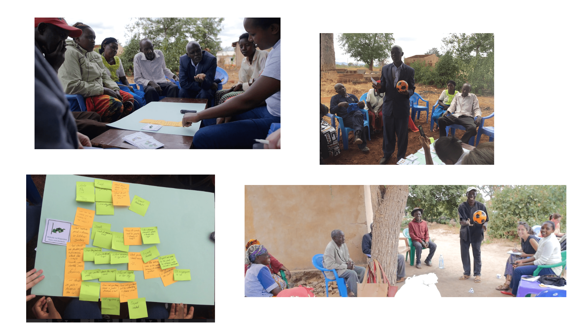

How to Make Citizen Science More Participatory
As one of two research fellows I joined Digital Creativity Labs, a research center focussing on interactive media, games, and play, and Bioversity, a global research-for-development NGO working to increase agricultural biodiversity and food security, to work on improving the experience of the farmers who choose to participate in Bioversity's agricultural research. This project pushed me to take charge of conducting the design process and deepened my understanding of service design.
Below is a visualisation of how I spent my time while doing this project. My work naturally grew to be centered around the field-work which with Kenyan farmers which was to happen 4 weeks into the project.

First Project / Construct a Problem Brief
To gain a deep understanding of the problem space my coworker and I first did a sentiment analysis of interviews which were conducted with farmers who were participating in Bioversity's participatory research programs. Our conclusion was that some of the farmers who decide to participate in Bioversity's programs end up feeling that it was not worthwhile. After further analysis we identified three major sources of frustration:
- The quality of the data collected for the research was often substandard.
- There was a lack of expectation-setting with participants who joined the program.
- The participating farmers did not receive guidance and feedback based on the outcomes of the research.
To address these sources of frustration we decided to focus on two things: first we wanted to redesign of the participant facing materials to manage expectations as well as improve data quality. Secondly we wanted to revamp the last touch points in service journey of the program to provide proper feedback to participants and to address the data concerns.
The touch points we wanted to improve:
Second Project / Form Redesign
I was responsible for layout and form redesign. Below are some of the different forms whose question flow and graphical layouts I created.

Third Project / Group Exercise Prototyping
For the redesign of the activites for the last workshop I prototyped a range of feedback activities based on the book Gamestorming. I knew that these workshops often ended up with the the participants being lectured at. I wanted to design activites which engaged everyone more and engaged everyone in knowledge sharing and discussions about data and results.
Self-directed Project / Graph Literacy Assessment
Some of the interviews suggested that participants could not read the data visualisations which contained the research results. I, as someone who is very interested in how different people understand representations of data, designed an assessment which allowed us to understand how well our participants understood the data visualisations we used to provide feedback. The assessment was oral and consisted of participants being shown different visualisations and responding to pre-defined questions about the nature of the data represented. Below are some of visualisations that I used for the assesment.
Field Testing
We went to do field testing with farmers in Kenya. There we spent five days working with local staff on the prototypes, and we spent four days testing the prototypes with program participants. There, I split my time evenly between leading the testing activities and documenting with written notes, photos, and videos how participants responded to the different prototypes.

The field work was a huge success: it triggered several changes to our designs and generated a lot of knowledge for Bioveristy to use in the future.
During the last weeks of the project my co-worker and I annotated our prototypes with the observations which were made in the field and we wrote up reports for our parent organisations.